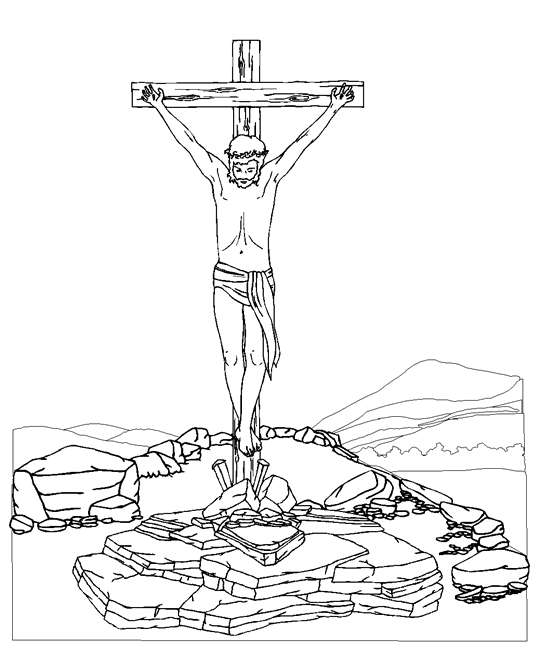

Read the lessons at the Vanderbilt Library website: http://divinity.lib.vanderbilt.edu/lectionary/CPentecost/cProper29.htm
Read
the lessons at the Vanderbilt Library website:
http://divinity.lib.vanderbilt.edu/lectionary/CPentecost/cProper29.htm
Sermon Summary
|
What Scripture is the Sermon is based on? |
_______________________________ |
|
What is the main point of the Sermon? |
_______________________________ |
|
Write down any figures of speech used by the preacher (Metaphors, Similes, hyperbole) |
_______________________________ |
|
Write down any new, unusual or particularly interesting words the preacher uses |
_______________
|
Next week: Isaiah 2:1-5, Psalm 122, Romans 13:11-14, Matthew 24:36-44
Middle-School Pew-work ...Page 2
|
11 Strengthened
with all might, according to his glorious power, unto all
patience and longsuffering with joyfulness; |
forgiveness of
sins: |
18 And
he is the head of the body, the church: who is the beginning, the
firstborn from the dead; that in all things he might have the
preeminence. |
How do you envision a king?
_______________________________________________________________________________________
_______________________________________________________________________________________
How would you explain to someone who doesn't know Jesus, why God would send his Son to die for us?
_______________________________________________________________________________________
_______________________________________________________________________________________
How would your relationship with God be different if God had come in power instead of in weakness?
_______________________________________________________________________________________
_______________________________________________________________________________________
K Y R F L O C K N T
|
(Jeremiah 23:3) Then I myself will gather the remnant of my flock out of all the lands where I have driven them, and I will bring them back to their fold, and they shall be fruitful and multiply. (NRSV) |
Word List
|
from www.geocities.com/lectionarypuzzles/ Free to distribute for free with this notice. Words are in a straight line in all directions. |
||
